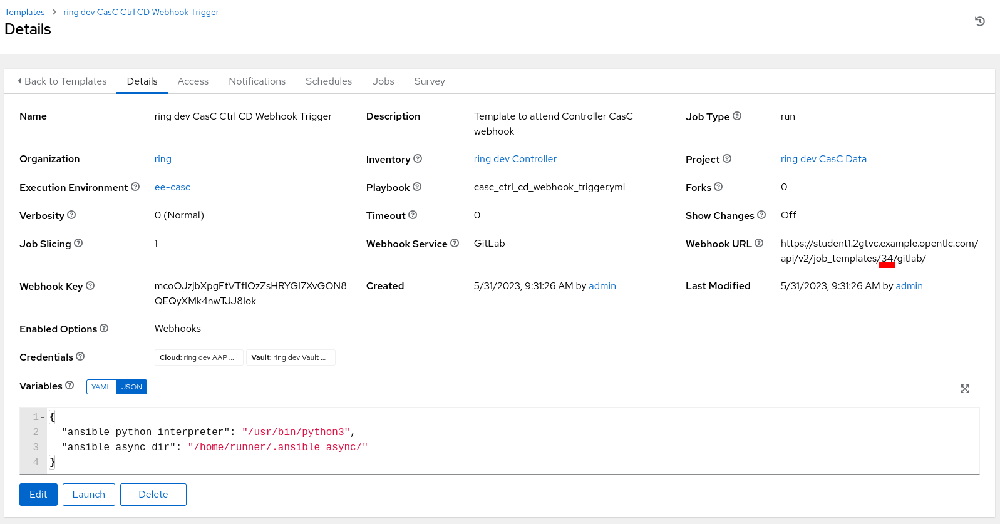
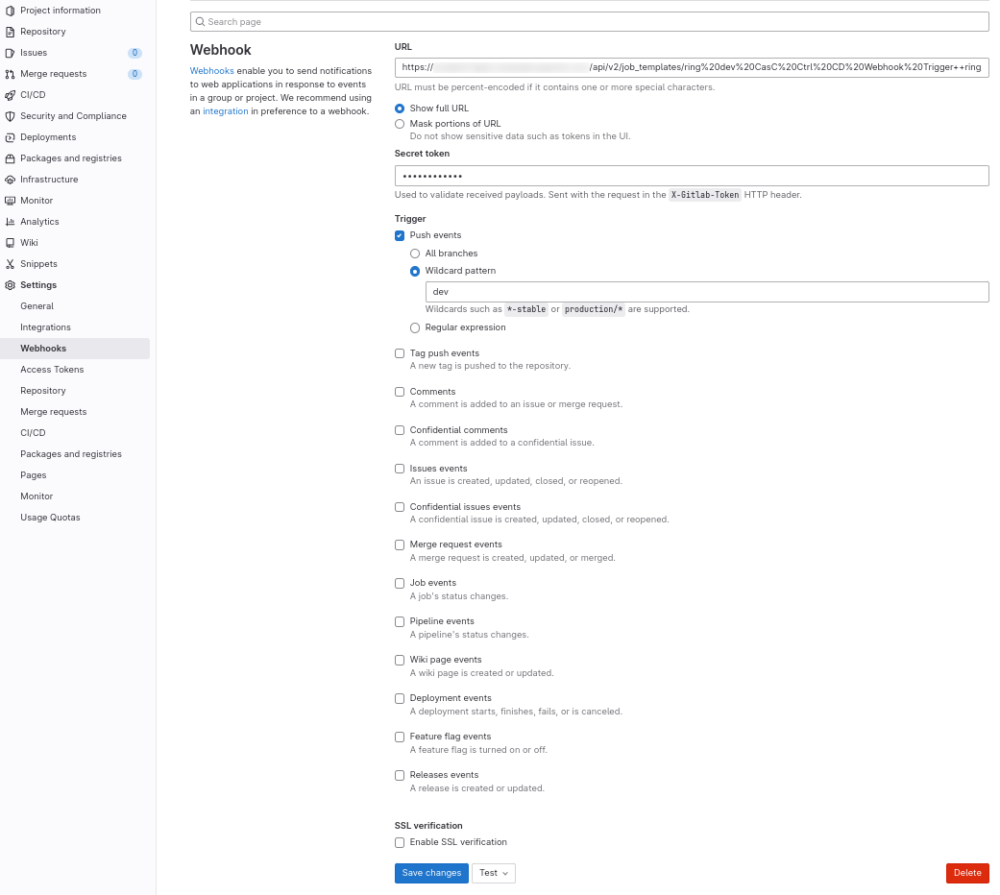
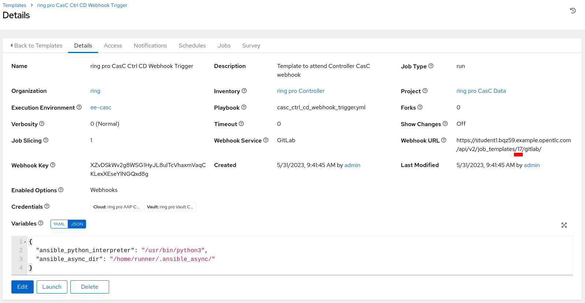
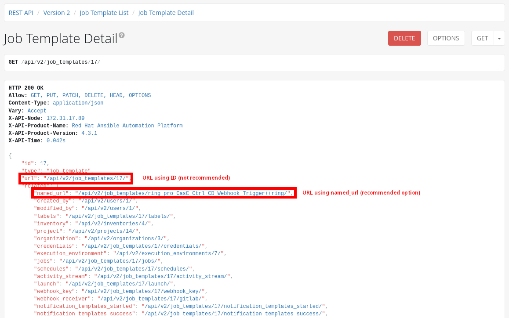
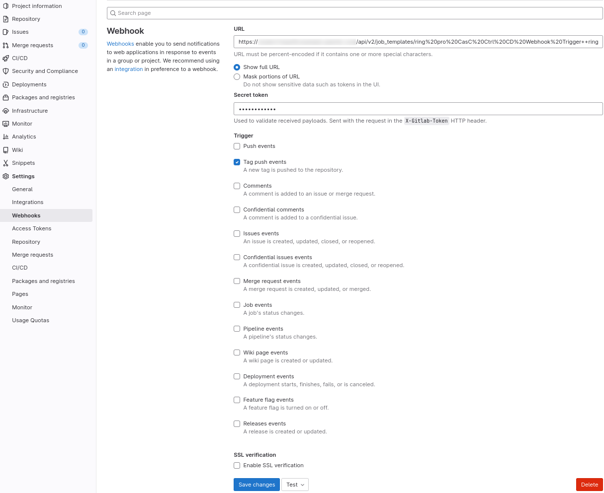

Day-0: Deploy the SUPERADMIN organization
Once all the objects are already configured at the GitLab repository, they can be deployed for the first time into the target Automation Controller.
1. Create the objects in the Controller
|
One important thing to remember is to add the public key part of
the private key configured at
|
|
Make sure that the required environment variables are properly set. See the Export all the variables to be used in the next steps |
Run the configuration playbook to create the defined objects in the target AAP Controllers, for both DEV and PRO environments, running the following commands:
ansible-navigator run casc_ctrl_config.yml -i inventory -l dev -e "{orgs: ${SUPERADMIN_ORG}, dir_orgs_vars: orgs_vars, env: dev}" -m stdout --eei quay.io/automationiberia/aap/ee-casc:latest --vault-password-file .vault_password --pull-arguments=--tls-verify=falseansible-navigator run casc_ctrl_config.yml -i inventory -l pro -e "{orgs: ${SUPERADMIN_ORG}, dir_orgs_vars: orgs_vars, env: pro}" -m stdout --eei quay.io/automationiberia/aap/ee-casc:latest --vault-password-file .vault_password --pull-arguments=--tls-verify=false|
The following requirements must be taken in consideration:
|
|
The file |
2. Configure the GitLab Webhooks
Once the objects has been created at the Ansible Automation Controller, there are two options to configure the GitLab Webhook to run the Continuous Integration for the CasC:
2.1. Dev environment
A Job Template and a Project have been created to automatically configure the GitLab Webhook making use of the GitLab API Token credential defined and vaulted in the configuration files (take a look at orgs_vars/${SUPERADMIN_ORG}/env/dev/controller_credentials.d/controller_credentials_gitlab_api_token.yml):
Launch the Job Template called {{ orgs }} dev Gitlab Webhook Creation:
Configure the following webhook trigger parameters for the dev environment:
|
The parameter |
After running the Job, the webhook will already be configured at the git repository for the specified organization, which will point to the selected Job Template in the selected Automation Controller.
Following steps must be performed to configure the GitLab Webhook to run the Continuous Integration for the CasC in the specified organization:
-
Get the
idnumber of the Job Template which will receive the webhook calls:Figure 5. Configure Webhook Get ConfigThe Url displayed in the (Workflow) Job Template configuration is using the ID to identify the (Workflow) Job Template, but it’s not recommended to use this identifier, as it can change if the configuration is applied to different AAP instances. Instead, the
named_urlfrom the API may be used.Figure 6. Configure Webhook Named URL -
Set the webhook information at the GitLab repository:
Figure 7. Configure webhook Set Info
2.2. Pro environment
A Job Template and a Project have been created to automatically configure the GitLab Webhook making use of the GitLab API Token credential defined and vaulted in the configuration files (take a look at [orgs_vars/${SUPERADMIN_ORG}/env/pro/controller_credentials.d/controller_credentials_gitlab_api_token.yml](orgs_vars/superadmin/env/pro/controller_credentials.d/controller_credentials_gitlab_api_token.yml)):
Launch the Job Template called {{ orgs }} pro Gitlab Webhook Creation:
Configure the following webhook trigger parameters for the dev environment:
|
The parameter |
After running the Job, the webhook will already be configured at the git repository for the specified organization, which will point to the selected Job Template in the selected Automation Controller.
Following steps must be performed to configure the GitLab Webhook to run the Continuous Integration for the CasC in the specified organization:
-
Get the
idnumber of the Job Template which will receive the webhook calls:Figure 12. Configure Webhook Get ConfigThe Url displayed in the (Workflow) Job Template configuration is using the ID to identify the (Workflow) Job Template, but it’s not recommended to use this identifier, as it can change if the configuration is applied to different AAP instances. Instead, the
named_urlfrom the API may be used.Figure 13. Configure Webhook Named URL -
Set the webhook information at the GitLab repository:
Figure 14. Configure webhook Set Info
3. All done
Now, all the initial configuration is done and from that moment, only pushing new commits to the dev branch will create or update all the objects at the Automation Controller.
Follow with the Day-2: Create a new Organization steps to create normal organizations.